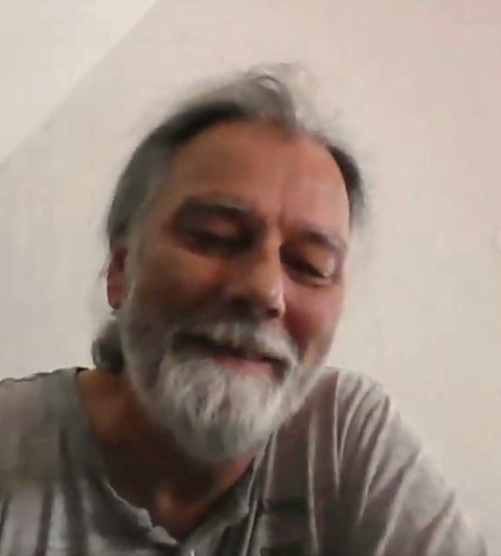

Der Termin steht — aber wie hinkommen?
Das Auto ist abgegeben, der Bus fährt ungünstig, und mit Katzenkorb wird jeder Weg doppelt so weit. Genau für solche Tage gibt es den Pfotenbus.
Der Pfotenbus ist Fahrdienst, Gassi-Hilfe und Gesellschaft in einem — für Tiere und ihre Menschen in Niederstotzingen und Umgebung. Sie müssen niemanden mehr um einen Gefallen bitten: Sie rufen einfach an, und ich komme.
Das Auto ist abgegeben, der Bus fährt ungünstig, und mit Katzenkorb wird jeder Weg doppelt so weit. Genau für solche Tage gibt es den Pfotenbus.
Hilfe anzunehmen fällt leichter, wenn man niemandem etwas schuldig bleibt. Mich rufen Sie ganz offiziell — das ist kein Gefallen, das ist mein Dienst.
Wenn es dem Liebling nicht gut geht, ist alles leichter, wenn jemand mitkommt, zuhört und in Ruhe mitdenkt. Dafür bin ich da — nicht nur als Fahrer.
Alles beginnt mit einem Anruf — und endet erst, wenn Tier und Mensch wieder gut zu Hause sind.
Zum Tierarzt, zur Tierpension, zum Hundefriseur — und sicher wieder heim. Das Beste: Der Beifahrersitz gehört Ihnen. Ich bleibe dabei, bis alles erledigt ist.
Wenn die Hüfte streikt oder ein Termin dazwischenkommt: Ich gehe mit Ihrem Hund seine Lieblingsrunde, schaue nach der Katze und fülle Napf und Wasserschale.
Futter, Medikamente aus der Tierarztpraxis, frische Streu: Ich bringe, was gebraucht wird — bis an Ihre Tür, mit einem kurzen Plausch dazu.
Manchmal ist das Wichtigste ein Mensch, der bleibt: im Wartezimmer, bei schweren Nachrichten — oder bei einem Kaffee, wenn das Haus zu still geworden ist.
Wir besprechen in Ruhe, was ansteht — Termin, Abholung, Besonderheiten Ihres Tieres. Den Preis erfahren Sie vorher, klar und fair.
Pünktlich vor Ihrer Haustür, mit Platz für Korb, Leine, Decke — und für Sie. Niemand muss hetzen, das Tempo bestimmen Sie.
Ich begleite Sie hinein, warte mit Ihnen und bringe Sie beide wieder nach Hause. Erst wenn Ihre Tür zu ist, ist meine Fahrt zu Ende.
62 Jahre alt, Tierfreund durch und durch — und ein Mensch, der lieber zuhört als hetzt. Beides kommt Ihnen zugute: Bei mir hat jede Fahrt so viel Zeit, wie sie braucht.
Warum ein alter Bulli? Er erinnert mich an einen Menschen, der mir wie ein Vater war. Von ihm habe ich gelernt, dass die wichtigsten Fahrten die sind, auf denen man füreinander da ist. Genau so eine Fahrt möchte der Pfotenbus für Sie sein.
Und falls Sie sich über den Namen auf dem Klingelschild wundern:
„Ich heiße wirklich Porsche.
Gefahren wird trotzdem Bulli.“
Klaus Porsche, Gründer & Fahrer des Pfotenbusses

Der Fahrer wäre startklar — der Bulli kommt noch. 😉
Manche Fahrten sind die schwersten überhaupt: der letzte Besuch beim Tierarzt. Der Heimweg, wenn das Körbchen auf der Rückbank leer bleibt. Solche Wege muss niemand allein gehen.
Ich fahre Sie, ich bleibe an Ihrer Seite, und ich habe Zeit — auch in den Tagen danach, bei einem Spaziergang oder einer Tasse Kaffee, wenn Sie von Ihrem Tier erzählen möchten. Trauer um ein Tier ist keine Kleinigkeit. Bei mir müssen Sie das niemandem erklären.
Kein Programm, keine Eile. Nur ein Mensch, der da ist.
Gestartet wird dort, wo ich daheim bin. Zum Beispiel:
Ihr Ort ist nicht dabei? Rufen Sie trotzdem an — der Bulli ist nicht kleinlich, und fragen kostet nichts.
Unbedingt — das ist sogar der Gedanke dahinter. Der Beifahrersitz gehört Ihnen, Ihr Tier reist gut gesichert mit. Sie müssen aber nicht: Auf Wunsch fahre ich Ihr Tier auch allein und melde mich sofort danach.
Das hängt von Strecke und Zeit ab. Sie erfahren den Preis vorher am Telefon — fest vereinbart, ohne Überraschungen. Eine Preisliste zum Mitnehmen ist in Arbeit.
Vor allem Hunde und Katzen. Für alle anderen Fellnasen, Federohren und Langohren gilt: einfach anrufen und fragen — meistens findet sich ein Plätzchen.
So früh wie möglich, so spät wie nötig. Für geplante Tierarzttermine gern ein paar Tage vorher — wenn es dringend ist, versuche ich möglich zu machen, was geht.
Bei einem echten Notfall zählt jede Minute: Rufen Sie zuerst Ihre Tierarztpraxis oder den tierärztlichen Notdienst an. Und dann gern mich — wenn ich fahren kann, fahre ich.
Am Telefon klären wir alles — ganz altmodisch und unkompliziert. Wenn ich gerade am Steuer sitze, rufe ich zurück. Versprochen.
0172 686 52 77Einfach anrufen — am Telefon bin ich ganz altmodisch erreichbar.
Erreichbar: Die genauen Zeiten trägt Klaus hier ein.
Und sonst: Wenn der Bulli irgendwo in Niederstotzingen parkt — sprechen Sie mich gern einfach an.